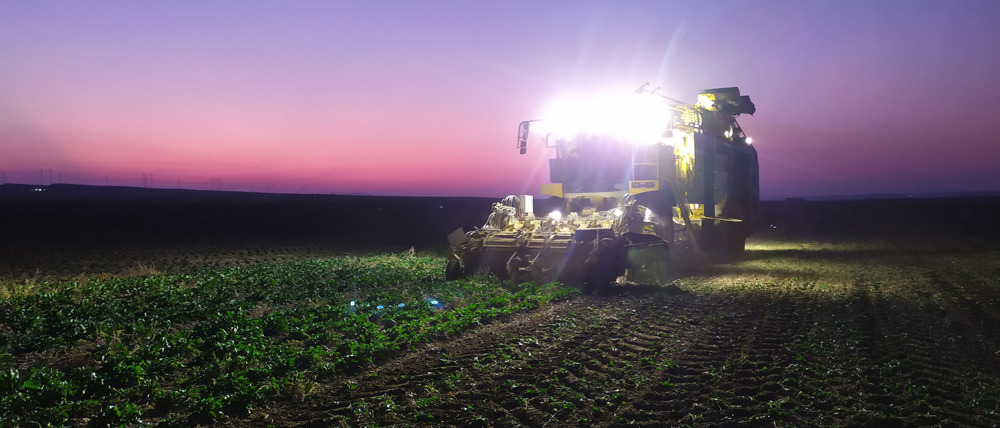
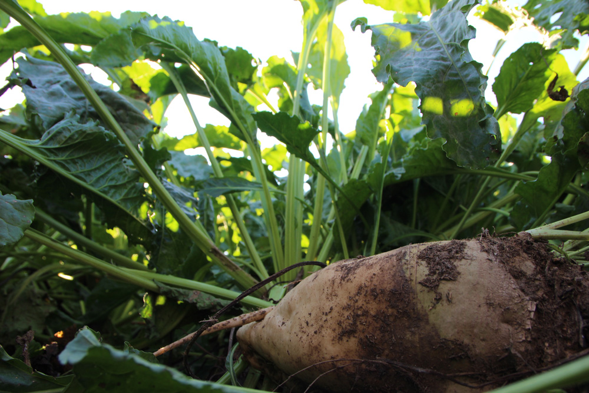

Speak with a human to filling out a form? call corporate office and we will connect you with a team member who can help.
Şəkər çuğunduru kökümeyvələrinin tərkibində orta hesabla 16-20%-ə qədər şəkər vardır. Şəkər çuğundurunun kökümeyvəsinin zavodda emalı zamanı böyük təsərrüfat əhəmiyyətinə malik olan cecə və patka (mət) kimi tullantılar alınır. Tullantının quru maddəsində 60%-ə qədər şəkər, 15% azotsuz ekstraktiv maddələr, 8-9% kül vardır. Şəkərin emalından sonra alınan tullantılar spirt, qliserin, ərzaq mayası, süd və limon turşusu, pektin kleyi istehsalı üçün istifadə edilir. Cecə sıxıldıqdan sonra quru maddəyə görə onun tərkibində 15% quru maddə, o cümlədən 10% azotsuz ekstraktiv maddə, 3% sellüloza, 0,7% kül, 0,1% yağ və 1,2% xam zülal vardır. Cecə iri buynuzlu mal-qara üçün qiymətli yemdir. Tullantının hər sentneri 80-85 yem vahidinə bərabərdir. Hektardan 30 ton çuğundur məhsulu götürüldükdə, cecə çıxımı 24 tona bərabər olur. Eyni zamanda bu tullantıdan təsərrüfatlarda gübrə kimi də istifadə olunur. Həmin gübrənin tərkibində 40-50% əhəng, 15% üzvi turşu, 0,2-1,7% azot, 0,2-0,8 fosfor, 0,5-0,9% kalium vardır.
Şəkər çuğundurunu alaq otlarından təmiz, münbit və nəmliklə kifayət qədər təmin olunmuş tarlalarda becərmək lazımdır. Şəkər çuğundurundan ötrü ən yaxşı sələflər – gübrələnmiş payızlıq buğda, payızlıq arpa, qarğıdalı, birillik dənli-paxlalı bitkilərdir. Şəkər çuğundurunun özü müxtəlif bitkilərdən ötrü – qarğıdalı, darı və dənli-paxlalılar üçün yaxşı sələfdir. Yaxşı olar ki, şəkər çuğunduru öz tarlasına 3-4 ildən sonra qaytarılsın.Şəkər çuğunduru mülayim istilik sevəndir. Toxumları 4-5°C temperaturda cücərməyə başlayır lakin, cücərti torpaq səthinə (25-28 gün) gec çıxır. Çıxışların tez alınması üçün (5-6 gün) 15-20 °C temperatur lazımdır. Cücərtinin ilk dövründə şəkər çuğunduru şaxtalara çox həssasdırlar. 3-4°C şaxtalar bitkini məhv edə bilər. Birinci cüt həqiqi yarpaqlar əmələ gəldikcə soyuğadavamlılıq artır və çuğundur 4-6°C şaxtalara dözə bilir. Assimilyasiya üçün optimal temperatur 20-23°C-dir. 6-8°C-dən aşağı temperaturda kökümeyvədə şəkər toplanması dayanır. Kökümeyvənin başcığında reproduktiv tumurcuqların formalaşması üçün əlverişli temperatur 15-23°C-dir. Payızda çuğundurun vegetasiyası 2-4°C temperaturda dayanır. Normal böyüyüb kökümeyvə məhsulu yaratmaq üçün 2200-2600°C aktiv temperatur tələb olunur.Şəkər çuğunduru zəif qələvi və neytral reaksiyalı torpaqları (pH=7,0-7,5) daha çox sevir. Torpaq reaksiyasının pH=6-dən aşağı olması bitkinin böyüməsinə mənfi təsir göstərir, zərərverici və xəstəliklərin təsirinə məruz qalır.
Birinci ili şəkər çuğunduru bitkisinin aşağıdakı səkkiz inkişaf fazası qeydə alınır: toxumun cücərməsi, çıxışlar çatal (çatal – türkcə çəngəl), 1-ci cüt yarpaqlar, 2-3 cüt yarpaqlar, 7-ci yarpaq, cərgə aralarının qapanması, cərgə aralarının açılması və texniki yetişkənliyin başlanması.
Becərmədə əsasən alaq otları məhv edilir və torpağın ehtiyat nəmliyi qorunub saxlanılır. Payızlıqların yığılması ilə eyni zamanda və ya dərhal sonra kövşən 5-7 sm dərinlikdə diskli üzləyicilər vasitəsilə, kökümsovgövdəli alaqlarla zibillənmiş tarlalarda isə gavahı üzləyicilərlə 12-14 sm dərinlikdə üzlənir. Alaq otu toxumlarının cücərməsini gücləndirmək üçün üzləmədən sonra sahədə 600-700 m3/ha həcmində aldadıcı suvarmalar aparılır və 3-4 həftədən sonra şum qaldırılır. Şəkər çuğunduru əkilən sahələrdə əsas problemlərdən biri torpağın kipləşməyə məruz qalmasıdır ki, bu köklərin normal inkişafına ciddi təsir edir. Odur ki, çuğundur əkilən sahələrdə torpağı çevirmədən dərin yumşaldıcı və ya reper vasitəsilə torpağın 35-45 sm dərinliyində yumşaldılması tələb olunur.Səpinqabağı hazırlıq bilavasitə çuğundur səpininə 3-4 gün qalmış aparılır. Səpinqabağı becərmədən əvvəl torpaqda 10-15 sm dərinlikdə nəmlik ehtiyatının yaradılmasına nail olmaq lazımdır. Buna nail olunduqdan sonra isə, kompleks kultivatorla 8-10 sm dərinliyində kultivasiya işləri aparılaraq toxum yatağı hazırlanır. Eyni zamanda cücərmiş alaqlar məhv edilir. Səpinqabağı kultivasiya şumun istiqamətinə bucaq altında aparılır.
Şəkər çuğunduru mineral qidalanmaya tələbkar bitkidir. Bir ton kökümeyvə və ona müvafiq olaraq yerüstü kütlə ilə şəkər çuğunduru torpaqdan 4-7 kq azot, 1,0-3,5 kq fosfor və 5-9 kq kalium elementi aparır. Yüksək məhsul almaq üçün üzvi və mineral gübrələrin verilməsinin böyük əhəmiyyəti vardır. Gübrə norması sələf bitkisindən və torpaqların qida maddələri ilə təmin olunma dərəcəsindən asılı olaraq planlaşdırılır. Yaşıl gübrələr də məhsuldarlığı xeyli artırır. Bu məqsədlə payızlıq taxıllar yığıldıqdan sonra noxud, soya, gülül, lüpin səpilir və sentyabrın axırında şumlanır. Şəkər çuğunduruna gübrələr planlaşdırılmış məhsula görə balans üsulu ilə verilməlidir. Respublikanın açıq şabalıdı suvarılan torpaqları şəraitində hektardan 500 sentner kökümeyvə məhsulu almaq üçün hektara 20 ton peyin və təsiredici maddə hesabı ilə N140P150K100 verilməlidir. Fosfor və kaliumun qalan hissəsi əsas şum altına, azotun 30%-i səpinqabağı becərmədə kultivasiya altına, 70%-i yemləmə gübrəsi kimi 2 dəfəyə –yarısı 3-4 cüt yarpaq fazasında və ikinci dəfə 7-8 cüt həqiqi yarpaq fazasında cərgə araları qovuşanadək verilməlidir. Hektara təsiredici maddə hesabı ilə 1,5 kq bor və 2,2-2,6 kq manqan verilməsi yaxşı nəticə verir.
Şəkər çuğundurunun becərilmə texnologiyasının bir çox elementləri – səpin norması, səpin üsulu, bitki sıxlığı və s. əkiləcək toxumun keyfiyyətindən asılıdır. Səpin üçün hibrid toxumlardan istifadə olunur. Səpiləcək toxumun laboratoriya cücərmə enerjisi 85%-dən, cücərmə qabiliyyəti 90%-dən və təmizliyi 98 %-dən az olmamalıdır. Toxumlar cilalanmış, kalibrlənmiş və qidalı maddələrlə zənginləşdirilmiş, kompleks xəstəliklərə qarşı dərmanlanmış və mikroelementlərlə işlənilmiş formada olur. Şəkər çuğunduru torpağın 5-6 sm dərinliyində temperatur 7-8°C olduqda səpilməlidir. Səpin qısa müddətdə 3-5 günə başa çatdırılmalıdır. Respublikanın əksər rayonlarında şəkər çuğundurunu fevralın axırı – martın əvvəlində səpmək olar. Suvarma şəraitində ən yaxşı səpin üsulu cərgəarası 45-50 sm olan gencərgəli nöqtəvi səpindir. 600-700 sentner kökümeyvə məhsulu almaq üçün, yığımqabağı hektarda 100 min bitkinin olması kifayətdir. Cərgəarası 45 sm olan suvarma zonalarında bitki arası məsafə 18 sm, 50 sm olduqda isə 16 sm götürülür. Hal-hazırda dəqiq toxumsəpən texnikalardan istifadə olunduğu üçün toxumlar arasında məsafə gözlənilir və normal cücərtilər alındığından seyrəltməyə ehtiyac qalmır. Torpaq səpinə yaxşı hazırlandıqda və səpin üçün yüksək keyfiyyətli toxum işlətdikdə hər metr cərgəyə 10-15 toxum səpib 6-7 cücərti saxlamaq məsləhətdir. Səpin zamanı aqreqat saatda 4-5 km sürətlə hərəkət etməlidir. Toxum torpağın qranulometrik tərkibindən asılı olaraq ağır boz torpaqlarda 2,5-3 sm, yüngül və orta gilli şabalıdı, qonur və qəhvəyi torpaqlarda 3-5 sm, kövşənlik əkinlərində isə 2-3 sm dərinliyə basdırılmalıdır. Əkinə qulluq vegetasiya suvarmalarından, cərgə aralarının becərilməsindən, yemləmə gübrəsi verilməsindən, alaqlara, xəstəliklərə və zərərvericilərə qarşı mübarizə aparmaqdan ibarətdir. Tədbirlər hələ çıxışlar alınmamışdan başlayır. Hava şəraitdən asılı olaraq çuğundurun cücərtiləri səpindən 8-20 gün sonra alınır. Bu müddət ərzində alaqlar əmələ gələ bilər, torpaq səthində qaysaq əmələ gəlmə ehtimalı mövcuddur. Odur ki, çıxışın alınmasından sonra monitorinqlər nəticəsində alaqların cücərməsinə, hansı dərinlikdən çıxmasına, torpaqdakı nəmliyin miqdarına nəzarət olunmalıdır. Şəkər çuğunduru alaqlanmaya qarşı olduqca həssasdır. Adətən şəkər çuğunduru tarlalarında çoxlu miqdarda alaq növlərinə rast gəlinir. Dünyanın bütün çuğundur əkən ölkələri şəkər çuğundurunu herbisid tətbiq etməklə becərirlər. Çıxışdan dərhal sonra alaqlanma müşahidə olunursa herbisid çilənməsi aparılmalıdır. Herbisid səpini zamanı torpaq quru olmamalı, küləkli, yağışli, soyuq havada, həmçinin suvarmadan və ya yağışdan həmən sonra herbisid səpilməməmlidir. İlk növbədə dərmansəpənin çəninin təmiz olduğuna, əvvəlki istifadədən sonra yuyulduğuna əmin olmaq və təmiz sudan istifadə etmək lazımdır. Dərmansəpənin çəni yarıya qədər doldurulduqdan sonra qarışdırıcı işə salınaraq müəyyənləşdirilmiş dərman miqdarı çənə əlavə olunur. Qeyd edilən əməliyyatlar icra olunduğu zaman təhlükəsizlik qaydalarına riayət olunmalıdır.Vegetasiyanın əvvəlində və axırında ümumi vegetasiya suvarma norması 9000-9500 m3/ha təşkil edir. Yayın ortalarında çuğundur güclü surətdə inkişaf edir, böyük miqdarda su sərf edir. Buna görə də suvarma normaları əvvəlki inkişaf fazalarına nisbətən artırılmalıdır. Suvarmaların sayı, müddəti və norması torpaq-iqlim şəraitindən və bitkinin vəziyyətindən asılı olaraq aparılır.Şəkər çuğundurunun xəstəlik və zərərvericilərinə qarşı mübarizədə ilk növbədə aqrotexniki və bioloji mübarizə üsullarından istifadə edilməlidir. Xüsusi hallarda kimyəvi preparatlardan istifadə etmək olar. Şəkər çuğunduruna müxtəlif həşəratlar ziyan vururlar. Bunlar çuğundur birəsi, yarpaq və kök mənənəsi, yarpaqyeyən tırtıllar, çəmən kəpənəyi, məftil qurdları, minalı çibinlər və s.-dir. Bunun üçün növbəli əkinlər yüksək aqrotexniki tədbirlərlə yanaşı bioloji və kimyəvi mübarizə üsulları da tətbiq edilməlidir. Bioloji mübarizə tədbiri kimi, trixoqrammadan və biopreparatlardan istifadə edilir.Şəkər çuğunduru unlu şeh, pas, serkospora, kök çürümə, qoturluq, pernosporioz, virus xəstəliyi mozaika, sarılıq, xloroz və s. xəstəliklərdən zədələnir. Bitkinin xəstəliklərdən mühafizəsinin başlıca üsulu torpaqda və toxumda xəstəlik törədicilərin miqdarının azalmasını təmin edən profilaktiki – hər şeydən öncə aqrotexniki, bioloji üsuldur. Xəstəliklərə qarşı toxum fungidsidlərlə dərmanlanmalıdır və növbəli əkinə riayət edilməsi olduqca zəruridir.
Şəkər çuğundurunda şəkər toplanması havanın orta sutkalıq temperaturu 6-8°C-yə enənə qədər davam edir. Respublikamızda belə temperatur noyabr ayının birinci yarısında müşahidə olunur. Ona görə də şəkər çuğundurunun yığımına oktyabr ayının əvvəlindən başlanmalı və noyabr ayının 10-a kimi başa çatdırılmalıdır. Vegetasiyanın sonuna yaxın yarpaqlardakı qida maddələri kökümeyvəyə axır və yarpaqlar tədricən saralıb quruyur. Yığım texniki yetişkənlik, yəni kökümeyvələrdə şəkər faizi ilə əlaqədar aparılır. Əgər tarlada yaşıl yarpaqlı massivlər olarsa yığımı gecikdirmək lazımdır.